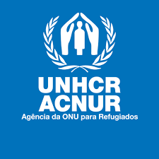

Opções de doação:

ACNUR
Fornece assistência a milhões de pessoas deslocadas no Iémen, oferecendo abrigo, alimentos, água e serviços médicos.
Desde 2015, o Iêmen vive uma das piores crises humanitárias do mundo. A guerra, travada entre forças do governo, apoiadas por uma coalizão liderada pela Arábia Saudita, e os rebeldes houthis, apoiados pelo Irã, já deixou centenas de milhares de mortos e feridos. Mas os combates são apenas uma parte do sofrimento.Mais de 24 milhões de pessoas — cerca de 80% da população — dependem de ajuda humanitária para sobreviver. A fome atinge níveis alarmantes: milhões de crianças estão desnutridas, e muitas morreram por falta de alimento, água potável e cuidados médicos básicos. Hospitais, escolas e mercados foram bombardeados. A infraestrutura do país está em ruínas.
Além da violência, o bloqueio de portos e a destruição de estradas dificultam a entrada de ajuda humanitária. Epidemias como cólera e COVID-19 agravam ainda mais a situação. O povo iemenita vive em um cenário de desespero constante, com pouca atenção da comunidade internacional.
Mesmo uma pequena doação pode ajudar a fornecer alimentos, água limpa, medicamentos e abrigo para quem perdeu tudo. Organizações humanitárias como a UNICEF, o Comitê Internacional da Cruz Vermelha e o Médicos Sem Fronteiras estão no terreno, salvando vidas todos os dias.
Fornece assistência a milhões de pessoas deslocadas no Iémen, oferecendo abrigo, alimentos, água e serviços médicos.
| Sobre o COD: | Sobre Nós: | Contate-nos: |
|---|---|---|
| ©CallofDonation | Criado por: | Callofdonation@gmail.com |
| é um site de arrecadação de | Artur Oliveira | |
| fundos para vítimas de guerra | Andrey Tavares | |
| Éric Alves | ||
| Gabriel Ferreira |